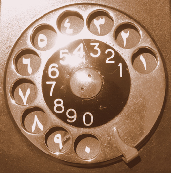
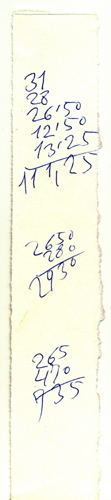
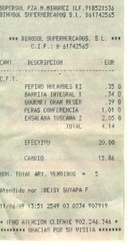
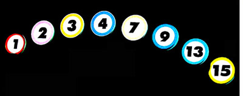
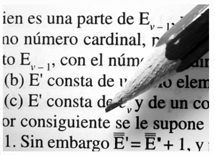
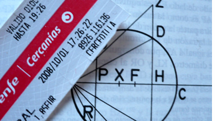
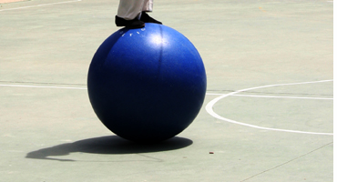

Quizá alguna persona que se encuentre en esta sala consiga un día el Premio Nobel de Química, o el de Economía o, si no es demasiado desalmado, el de la Paz. Pero lo que es seguro es que nadie que esté aquí presente logrará nunca el Nobel de Matemáticas porque, como es sabido, no existe el Premio Nobel de Matemáticas. Durante mucho tiempo se hizo correr el bulo de que Alfred Nobel no creó tal premio en venganza porque su esposa mantenía un romance con un famoso matemático de la época, pero se sabe que nunca se casó, así que el rumor es falso de raíz. Lo que Nobel consideró en su día fue que las matemáticas no constituyen «una fuente de progreso y felicidad para la humanidad». Es decir, en opinión de Nobel, las matemáticas son inútiles.También como es sabido, desde 1936 hay una alternativa al Nobel de las Matemáticas. Se trata de las medallas Fields, que técnicamente es conocida como «La medalla internacional para descubrimientos sobresalientes en matemáticas», que se concede cada cuatro años. En la última edición la recibió el matemático ruso Perelman por «sus contribuciones a la geometría y sus ideas revolucionarias en la estructura analítica y geométrica del flujo de Ricci». Este galimatías incomprensible permite resolver, y esto es lo interesante, el famoso teorema de Poincaré, que me atreveré a afirmar es absolutamente desconocido por el 99,999999 % (seis cifras decimales) de la población mundial. Perelman es un tipo realmente curioso, porque no solo rechazó el premio y rehusó acudir a la entrega, sino porque es autor de un trabajo llamado «Superficies en silla en espacios euclídeos». Además, Perelman es un talentoso violinista y buen jugador de ping-pong, aficiones que, en cierto modo, también son una inutilidad.
Quien el mismo año que Perelman sí aceptó el premio fue el matemático de origen chino Terence Tao, que es coautor del teorema Green-Tao, que afirma que existen progresiones aritméticas de números primos absolutamente largas. O sea, que, según lo explicó él mismo, en la infinitud de los números enteros es posible hallar, en algún lugar de la serie, una progresión de números primos con separación igual. Es un asunto que, evidentemente, no sirve para nada. Lo mismo que el Gran Teorema de Fermat, por cuya resolución mereció otra medalla Andrew Wiles.
Al mismo tiempo que se fallan los Premios Nobel, concretamente el mes de octubre de cada año, se fallan los premios IGNobel, lo que traducido del inglés viene a significar algo así como los «premios innobles», «de baja categoría» o «ignominiosos». Son concedidos por la revista de humor científica Annals of Improbable Research, o Anales de Investigaciones Inverosímiles, fundada por el matemático Marc Abrahams y que se conceden en la Universidad de Harvard con la solemne presencia de un Premio Nobel auténtico. Entre los galardones concedidos en los últimos años hay uno que demuestra que las pulgas de los perros saltan más alto que las pulgas de los gatos; otro, que estudia la intensidad del cacareo de los pollos como medida de la velocidad del viento durante un tornado; otro, que premia una investigación sobre las bolas de alquitrán, un experimento comenzado en 1927 y que demuestra que una bola de tal sustancia gotea una vez cada nueve años; o el que mide las fuerzas de resistencia implicadas en el arrastre de ovejas sobre distintas superficies. ¡Hay que ser literariamente imaginativo para plantear problemas de este tipo!
Aunque resulta hilarante, que lo es, los premios IGNobel no se conceden a cualquiera, sino a aquellos capaces de llegar a «logros torpes y que ayuden a pensar», y en muchas de las investigaciones premiadas se ponen en juego refinados análisis matemáticos. Entre las Medallas Fields y los premios IGNobel, es casi seguro de que Alfred Nobel, de seguir vivo, no solo sería la persona más longeva del planeta, sino que se reafirmaría en la idea de que las matemáticas no sirven absolutamente para nada.
Sin embargo, esta idea de Alfred Nobel choca con el sentido común, que es como se designa a la opinión generalizada de la población mundial. Si se realizara un estudio titulado algo así como «Análisis del Aprecio por el Valor de las Matemáticas en la Escuela y en la Vida Cotidiana», casi se podría asegurar que buena parte de los entrevistados diría que hay que aprender Matemáticas porque las matemáticas son «bastante útiles» o «muy útiles», y se opinaría que, en el extremo opuesto, materias como la Literatura o la Geografía son «bastante inútiles» o «francamente inútiles». Esto explica el respeto de que gozan los departamentos y profesores de matemáticas, física o química de cualquier instituto o universidad, que está en el extremo opuesto de la indiferencia que sufren los docentes de literatura, música o artes.
La prueba de la utilidad de las matemáticas está en seguir su avance en los currículos escolares. Para un niño o una niña de infantil, es muy importante saber que el trece viene después del doce; a principios de Primaria descubren que ocho por ocho son sesenta y cuatro; más adelante, aprenden a dividir 123,45 por 67,89; luego, y progresivamente, pueden determinar que 137 es un número primo; que catorce dividido por tres da un decimal que podemos calificar como periódico puro; que dados el cateto y la hipotenusa de un triángulo rectángulo, podemos calcular el valor del otro cateto; que el valor absoluto de -100 es 100; que existen cuatro procedimientos para resolver un sistema de ecuaciones lineales con dos incógnitas; que podemos calcular el término enésimo de una progresión geométrica o que la derivada de e elevado a x es exactamente e elevado a x.
Podría hacerse un estudio denominado «Análisis de las Curvas de Utilidad Práctica de algunas Asignaturas de los Currículos Docentes». En casi todas las materias, a medida que avanzan los cursos se gana en aproximación a la realidad tangible. Sin embargo, con las Matemáticas parece ocurrir lo contrario. De las realidades más tangibles (las series numéricas, las adiciones, los repartos, la proporcionalidad…) se pasa a entes cada vez más intangibles (los números negativos y los imaginarios, los límites, la trascendencia de pi…)

Nadie duda de que dominar las cuatro operaciones y unas nociones básicas de geometría son muy importantes en la vida cotidiana. La estanquera de mi pueblo, una mujer que debe tener setenta años, utiliza el dorso de las fundas de los cartones de tabaco para hacer cuentas, cuando los clientes no se llevan una cajetilla o un cartón y combinan diferentes marcas. Pero las cajeras del supermercado ni siquiera necesitan esas habilidades; pasan los artículos delante de un lector de barras y la máquina expide un ticket en el que aparecen sumas y desglosa el IVA; la propia máquina permite calcular el cambio cuando se teclea el importe que entregamos. Recuerdo una tarde en que estaba en la caja e iba a pagar y se fue la luz. Llevaba una barra de pan y un brick de leche, cuya suma era sencilla de obtener, 1,90 euros, y tuve que esperar a que volviera la corriente. Como se ve, es muy útil que las cajeras sepan calcular, sobre todo si son fumadoras y quieren comprobar las cuentas que hace la estanquera.

Además, se dice, y es verdad, que los números están muy presentes en nuestra vida cotidiana. Podemos ver números en las marquesinas de los autobuses, en los odómetros de los coches, en las señales de tráfico, en los relojes, en las etiquetas de las prendas de vestir, en los lomos de los libros que forman parte de colecciones y en muchos lugares más. Sin embargo, el valor matemático de muchos de esos números es insignificante, porque aprovechamos de ellos solo su capacidad para representar condensada y mnemónicamente códigos de distinto tipo. Sería igual de efectivo, aunque más laborioso, representar las líneas de autobuses con nombres de frutas. O codificar las tallas de pantalones con letras.

Las sociedades modernas tienen a gala el deseo de alfabetizar a sus ciudadanos. Además de que a los gobiernos ni a los estados no les gusta que les tachen de incultos, conviene que sus ciudadanos se alfabeticen para ser autónomos a la hora de comprar, vender, interpretar el plano de una línea de metro, leer las instrucciones básicas de sus teléfonos móviles y un sinfín de cosas más. También, en paralelo, interesa que estén suficientemente numeralizados, para que puedan comprender e interactuar con todas las situaciones que exigen el manejo de cantidades y operaciones elementales.
Si hablamos de literatura, el interés porque los ciudadanos lean, y de ahí las campañas de fomento de la lectura, es muy reciente en la historia de la Humanidad y data de mediados o finales del pasado siglo XX. A ningún gobernante del siglo XIX, en plena Revolución Industrial, se le ocurrió que los obreros y obreras que se incorporaran a las fábricas debieran leer literatura, y ya sabemos que leer literatura o ensayos científicos era un signo de rebelión.
¿Para qué quieren nuestros gobernantes que la población aprenda matemáticas? ¿Desean que nos extasiemos con su belleza intrínseca? ¿Quieren que disfrutemos de bellos teoremas inútiles, como el de Fermat? ¿Nos facilitan con ello la comprensión del Universo y de las leyes que lo gobiernan?
En algunos deliciosos ensayos, el profesor John Allen Paulos ha hablado del anumeralismo, o incapacidad que tienen algunas personas para interpretar y operar con números. Podría pensarse que está hablando de personas de bajo nivel cultural, pero no. El anumeralismo es un fenómeno que afecta también a una población que se considera ilustrada, profesionales capaces en sus áreas y que poseen un amplio bagaje cultural. No solo fueron a la escuela y sacaron brillantes notas, sino que realizaron muchos cursos de matemáticas, incluso con calificaciones aceptables.
Vivimos tiempos en que están muy de moda las pruebas de diagnóstico. En mis épocas de estudiante, todo se estudiaba en la famosa Enciclopedia Álvarez, que se definía como «intuitiva, sintética y práctica», y en la que se proponían problemas con enunciados como estos:
En una casa, los ingresos diarios son de 38 pesetas. ¿Cuánto podrán gastar cada día si a fin de mes quieren comprar con los ahorros un trajecito de 250 pesetas para uno de los hijos?
En una fortaleza hay 750 hombres que tienen víveres para 35 días. Si en un ataque mueren 54 hombres, ¿para cuántos días tendrán víveres los que quedan?
Sobre una plaza de toros de 16 metros de radio se quieren echar 25 kilogramos de arena por metro cuadrado. ¿Cuántas toneladas métricas serán?
Hoy, los enunciados han cambiado, pero además se han incorporado aspectos relacionados con la estadística, la probabilidad o la lectura de gráficas. Los problemas que se proponen a los alumnos, equivalentes a los anteriores, tienen enunciados actualizados como por ejemplo estos:
He conseguido ahorrar 90 € para comprarme un MP4, pero el que me gusta vale 120 €. He esperado a las rebajas de enero y tiene un 20% de descuento. ¿Cuántos euros me faltan?
Lucía va a viajar a Estados Unidos. Por ello va a cambiar 500 € al banco, donde le informan que el cambio monetario ese día es: 1 euro, 1,32 dólares. Al cambiar los 500 €, ¿cuántos dólares recibe? Al volver del viaje aún le quedan 171,60 $. En el banco el euro está ahora a 1,30 dólares. ¿Cuántos euros recibe?
En anteriores charlas he propuesto otros cinco problemas más breves, que no requieren ningún cálculo matemático y que ponen en juego conocimientos más generales:
¿Qué expresa el número pi?
¿Por qué al multiplicar una cantidad entera por 10 añadimos un cero a la derecha?
Diga alguna aplicación práctica de la raíz cuadrada, aunque nunca la haya utilizado en su vida cotidiana.
¿Por qué el área de un triángulo se calcula dividiendo por dos el producto de su base por su altura?
Cite el nombre de cuatro matemáticos, incluyendo el de una mujer matemática.
Lo que pretendo medir con estas preguntas es la «huella matemática». Alguien dijo una vez que la cultura es lo que queda cuando uno ha leído y ha estudiado mucho y lo ha olvidado todo. ¿Qué le queda como sedimento matemático a una persona al cabo de diez, doce años de estudio de matemáticas, cuando obtiene su título de Graduado en Secundaria?

Aunque admitamos que las matemáticas no hagan felices a la humanidad ni contribuyan a su progreso, lo cierto es que la historia de la matemática se remonta a muchos milenios atrás, incluso antes de que se creasen los sistemas de numeración y los algoritmos de cálculo más torpes. Es una historia ligada a la del pensamiento y a la filosofía natural. A diferencia de otras ciencias, que trabajan sobre objetos tangibles, la matemática se parece a la filosofía en que no trabaja sobre cosas, sino sobre cualidades de las cosas y de los conjuntos de cosas.
El progreso de las matemáticas ha seguido un camino muy largo, que pasa por descubrimientos apasionantes: los primeros sistemas de numeración de bases naturales como cinco o diez, utilizados por pueblos primitivos; los sudores de los escribas egipcios para trabajar con fracciones unitarias; la utilización de los sistemas de numeración de bases 12 y 60, utilizada por los matemáticos y astrónomos babilonios; la titánica lucha de los calculistas hindúes para expresar el ingente número de sus dioses; el minimalismo y el refinamiento chinos a la hora de realizar inventarios y trabajos de agrimensura con ayuda de sus ábacos; los intentos griegos de formalizar la geometría y vincularla con la teoría de números; la revolucionaria introducción del cero de los místicos mayas… Y luego Vieta, Fibonacci, Cardano, Napier, Fermat y, más adelante, Newton, Leibnitz, Gauss, Euler, Abel, D'Alembert, Fourier, Poincaré…

Es probable que un electricista no tenga que saber de matemáticas más que lo necesario para hacer recuentos, realizar ciertas medidas y elaborar presupuestos y facturas, pero incluso esos chicos que ocuparán un estrato cultural relativamente bajo merecen algo más de las clases de matemáticas que han recibido a lo largo de sus vidas. Es muy posible que lo único que hicieran en las clases de matemáticas fueran cuentas y problemas, que acabaron por hastiarles, lo que explica el brote de una extraña enfermedad que sufren muchos estudiantes y ciudadanos, llamada aritmofobia.
Bien pensado, la literatura es una inutilidad. No tiene ninguna aplicación práctica, y el técnico que necesito para cambiar la instalación eléctrica de mi casa no hará mejor su trabajo si ha leído a Homero, a Stevenson, a Melville, a Kafka, a Machado o a Coetzee. Tampoco le servirá de nada conocer que existieron los místicos pitagóricos, ni las leyendas tibetanas asociadas a la Torre de Hanoi, ni que existen los llamados primos gemelos, ni que el casi analfabeto Tartaglia descubriera por su cuenta un método para resolver ecuaciones de tercer grado, ni que Newton o Leibnitz se odiaran, ni que a Emmy Noether se le vetase su entrada en la universidad por el hecho de ser mujer, hace solo un siglo.

Bien pensado también, ciertas tareas matemáticas son una inutilidad. Salir de paseo y observar números en el entorno; experimentar con recortes de cartón simulando ser tapas de alcantarillas y comprobar por qué estas son circulares y no elípticas u octogonales; evaluar qué procedimientos, de recuento, estimación o pesada, son más útiles para saber cuántos granos de arroz puede haber en un kilo; crear series numéricas con distintos criterios y estimar cuál es su tendencia o límite; proponer y resolver acertijos numéricos que pongan en juego procedimientos heurísticos y no solo algorítmicos… ninguno de estos problemas hará que nuestros alumnos ganen el Nobel de Matemáticas, pero es posible que puedan aspirar a alguno de los IGNobel, que premian los logros inútiles pero que ayudan a pensar.
Creo que está claro por qué la sociedad encarga a la escuela que enseñe matemáticas, y ciertas matemáticas muy útiles. No se trata de que nos extasiemos con ellas, ni de que comprendamos mejor la realidad física, ni de facilitarnos herramientas para que seamos críticos… La sociedad necesita ciertas dosis de matemáticas para que el engranaje social siga funcionando. Y encarga a maestros y profesores que dosifiquen esos conocimientos curso a curso, procurando que todos los ciudadanos adquieran las competencias básicas para ser consumidores y contribuyentes. La «huella matemática» importa poco. La «formación matemática», menos aún.
Esto no es resultado de una conspiración, sino de la pura costumbre. La escuela ha sido, y sigue siendo, una de las instituciones con más inercia social, y los responsables no son evidentemente los profesores. ¿Qué ocurriría si la escuela decidiera no enseñar a dividir, pongamos por caso, argumentando que para eso están las calculadoras? Estoy seguro de que dentro de no mucho tiempo ciertas enseñanzas escolares serán obsoletas, como lo son hoy las conversiones a fanegas, los cálculos de corretajes, la raíz cúbica, las tablas de logaritmos o la regla de tres múltiple. En nuestras manos está ser críticos y poner los medios para que esa transición sea breve y eficaz, de modo que las matemáticas recuperen su papel como vehículo de pensamiento, análisis y disfrute.
Es hora de acabar esta larga disertación. Agradezco mucho la invitación que se me ha hecho para estar aquí. Ha sido una oportunidad para pensar, una vez más, sobre la bella inutilidad de las matemáticas. A mí me gustaría pasar a la historia por haber resuelto los teoremas de Fermat o de Poincaré, aunque sean absolutamente inútiles, y en lugar de eso me he tenido que conformar con dar clases de matemáticas, que espero hayan sido muy provechosas para mis alumnos, y, ahora, con escribir libros que espero no sean útiles más que para hacer pensar y pasar el rato.
Es posible que mis conclusiones sean también inútiles. Es evidente que yo abogo por una desnumeralización de los contenidos matemáticos que se imparten en la escuela; me da la impresión de que la metodología y los programas chocan con lo que epistemológicamente ha sido el desarrollo matemático, en el que la necesidad nos ha ido dotando de la conveniencia de disponer de números, operaciones y medidas. En lugar de eso, la escuela procede al revés: primero presenta el hecho y luego justifica la necesidad, lo que debe producir algún cortocircuito en la mente de alumnos que al cabo del tiempo se convierten en seres anuméricos e incluso aritmofóbicos.
También abogaría porque los profesores de matemáticas instasen a sus alumnos a leer matemáticas, y a que lo hiciesen en clase. La lectura permite un descubrimiento autónomo y nos concede la posibilidad de recrear hechos, biografías y épocas. Si en la escuela los alumnos se acostumbran a disfrutar de los aspectos más humanos de los descubrimientos matemáticos, de los intentos de las diferentes culturas por entender el mundo a través de regularidades y números, de las dificultades y logros de los grandes genios, del heroísmo de las primeras mujeres matemáticas… es posible que, de mayores, puedan buscar por sí mismos artículos, ensayos o libros que hablen de matemáticas, de una forma tan natural como si buscasen otros de historia, geografía o aventuras.
Decía Weierstrass que «un matemático que no es en algún sentido un poeta no será nunca un matemático completo». La poesía es la más inútil de las artes literarias. Estoy seguro de que nadie sentirá jamás aprecio por las matemáticas si no ha tenido oportunidad de disfrutar, incluso de extasiarse, ante algún hecho matemático. Está en nuestra mano, como profesores, procurar a la mayoría de nuestros alumnos al menos algún elemento de éxtasis, que deje huella.
28 de marzo de 2009